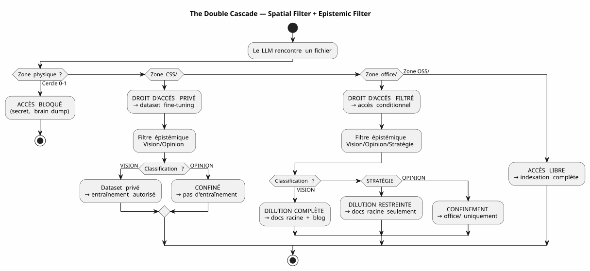
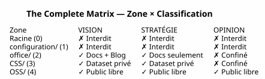

The LLM Governance Matrix — Why Your AI Security Starts with the Tree
Published on 04 May 2026
- The Problem: Prompt Engineering is a sandcastle
- My Answer: the Matrix 4×4
- How the LLM consumes this matrix
- Implementation: Typed Gradle Tasks
- Why It’s a Manifesto, Not Just a Spec
- The Complete Cascade — from Brain Dump to Blog Article
- Pro/Con
- Conclusion: Organize your files, not your prompts
- References
For months, I stacked the agent governance rules. Some files EAGER, lazy checklists, six-step session termination protocols And yet, a question remained pending: how the LLM knows what it has the right to do with a file ?
The answer is not in a prompt. It is in the file system.
Here is the architectural specification that makes the response usable — la LLM governance matrix.
The Problem: Prompt Engineering is a sandcastle
When you give a file to an LLM, you give it everything. The content, yes — but also the absence of safeguards. The LLM does not know if this file contains a secret, a speculative opinion, or closed-source code. He will index it, summarize it, cite it, mix it with other data — and potentially publish it in a public embedding or a user response
The classic parade is the prompt:
"Tu es un assistant sécurisé. Ne divulgue jamais d'informations confidentielles.
Si tu détectes un secret, ignore-le. Si tu détectes une opinion, ne la répète pas."This prompt has three problems:
-
It relies on the goodwill of the LLM. A model large enough for
solving complex bugs is big enough to circumvent an instruction of security drowned in 200k tokens of context
-
It is contextual, not structural. Change your prompt, change your LLM.
Change session — and the rule disappears.
-
It doesn’t scale. Each new file type, each new level
of privacy requires a new clause. Your prompt becomes a regulatory text that no one reads in full
|
The security of a system must never depend on an instruction that one may forget, bypass, or not load. It must depend on a a barrier that one cannot cross without explicitly wanting to |
My Answer: the Matrix 4×4
The solution I implemented in my workspace is a matrix zone × LLM access right. It does not ask the LLM to be prudent. It renders the structurally impossible imprudence.
Failed to generate image: PlantUML preprocessing failed: [From <input> (line 11) ]
@startuml
skinparam backgroundColor #FEFEFE
skinparam defaultTextAlignment center
skinparam wrapWidth 220
title The LLM Governance Matrix — Zone × Access Right
package "Workspace" {
rectangle "ROOT\n(Circle 0)\n━━━━━━\nBrain dump\nFree thought\n[FORBIDDEN LLM]" as Z0 #FFB3B3
rectangle "configuration/
(Circle 1)
^^^^^
Syntax Error? (Assumed diagram type: activity)
@startuml
skinparam backgroundColor #FEFEFE
skinparam defaultTextAlignment center
skinparam wrapWidth 220
title The LLM Governance Matrix — Zone × Access Right
package "Workspace" {
rectangle "ROOT\n(Circle 0)\n━━━━━━\nBrain dump\nFree thought\n[FORBIDDEN LLM]" as Z0 #FFB3B3
rectangle "configuration/
(Circle 1)
━━━━━━
Secrets, tokens
Private infra
[FORBIDDEN LLM]" as Z1 #FFB3B3
rectangle "office/\n(Circle 2)\n━━━━━━\nEditorial data\nArticles, framing\n[FILTERED Vision]" as Z2 #FFF3B3
rectangle "foundry/private/
(Circle 3)
━━━━━━
Code closed source
[DATASET PRIVATE]" as Z3 #B3D9FF
rectangle "foundry/public/\n(Circle 3)\n━━━━━━\nCode open source\nApache 2.0\n[FREE ACCESS]" as Z4 #B3FFB3
}
Z0 -[hidden]-> Z1
Z1 -[hidden]-> Z2
Z2 -[hidden]-> Z3
Z3 -[hidden]-> Z4
@enduml
The Five Zones (Spatial Dimension — GDPR)
Each zone of the workspace has a GDPR level that determines where the file can be routed:
Zone |
GDPR level |
Content |
Public RAG access right |
Root |
0 — Intimate |
Brain dumps, LLM conversations |
FORBIDDEN— never indexed |
|
1 — Restricted owner |
Secrets, tokens, API keys |
FORBIDDEN— never indexed |
|
2 — Restricted collaborative |
Editorial data, framing, training |
FILTERED— Vision only |
|
3 — Conditional open |
Closed source code, SaaS not public |
FORBIDDEN— exclusively private dataset |
|
4 — Native audience |
Apache 2.0 code, published plugins |
free— full indexing |
The rule is simple: the file path determines what the LLM can do with it. No metadata to maintain, no tag to add in the frontmatter, no manual classification for each commit. The file is in`OSS/` ? It is public. It is in`configuration/`? He is untouchable.
Epistemic Classification (Second Dimension)
The spatial dimension says where to route. But there is a second axis, perpendicular: what router. Some files in an authorized area contain information. which should not be diluted as is:

The epistemic classification grid, engraved in Rule 2bis of my governance agent :
| Status | Definition | LLM Signal | Destination | | VISION | Stabilized architecture, tested pattern | Declarative language, session/test references | Complete dilution + Blog | | STRATEGY | Business positioning, pricing | Market vocabulary, competition | Root docs only | | OPINION | Speculation, unvalidated hypothesis | Hypothetical language, intuition | Confinement Circle 0 |
The combination of the two dimensions — physical zone × epistemic classification — forms thefull matrix:

How the LLM consumes this matrix
The matrix is not a document that the LLM reads. It is a constraint implicit encoded in the composite context vector (EPIC 9 — in progress implementation).
Here is what the LLM receives each session:
VECTEUR COMPOSITE DE CONTEXTE
├── RAG pgvector → OSS/ + office/Vision
│ (similarité sémantique sur contenu publiable)
├── Knowledge Graph graphify → OSS/
│ (relations exactes entre artéfacts publics)
├── Knowledge Graph privé → CSS/
│ (relations entre code closed source — jamais exporté)
├── Métadonnées de zone → chaque fichier taggé par zone physique
│ (le LLM sait s'il est dans office/ ou OSS/)
└── Historique des décisions → WORKSPACE_VISION.adoc
(contexte temporel des arbitrages)Specifically, when the LLM tells me:
Je vais indexer le contenu de edster/ pour enrichir le knowledge graph...The zone metadata responds before the LLM even finishes its sentence: edster/`is in`CSS/, level 3 →access forbidden to the public knowledge graph RAG does not see it. The graph does not touch it. The user response does not doesn’t cite it.
|
The spatial ontology works as aUnix permissionfor the LLMs. You don’t ask a process to be careful with`/etc/shadow`— You deny him read access. Same principle. |
Implementation: Typed Gradle Tasks
The matrix is not a philosophy. It’s code. Here is the task contract. Gradle that implements it:
abstract class ZoneAwareIndexer @Inject constructor(
private val rootDir: DirectoryProperty,
private val configServer: ConfigServerProperty // → configuration/
) : DefaultTask() {
@Input
val zoneFilter: SetProperty<Zone> = project.objects.setProperty(Zone::class.java)
@OutputFile
val ragIndex: RegularFileProperty = project.objects.fileProperty()
@TaskAction
fun index() {
val allowedPaths = zoneFilter.get().flatMap { it.resolve(rootDir.get()) }
val forbiddenPaths = Zone.RESTRICTED.resolve(rootDir.get())
+ Zone.INTIMATE.resolve(rootDir.get())
// Le RAG ne voit jamais configuration/ ni la racine
// CSS/ alimente un index privé, pas celui-ci
// office/ est filtré par le classifieur Vision/Opinion
}
}
enum class Zone {
INTIMATE, // Cercle 0 — racine
RESTRICTED, // Cercle 1 — configuration/
EDITORIAL, // Cercle 2 — office/
CLOSED_SOURCE, // Cercle 3 — foundry/private/
OPEN_SOURCE // Cercle 3 — foundry/public/
}The task is testable. You can write a test that checks:
@Test
fun `le RAG n'indexe jamais configuration`() {
val index = ZoneAwareIndexer(rootDir, configServer)
index.zoneFilter.set(setOf(Zone.OPEN_SOURCE, Zone.EDITORIAL))
index.index()
assertThat(index.ragIndex).doesNotContain("configuration/")
}
@Test
fun `le code closed source est exclu du RAG public`() {
val index = ZoneAwareIndexer(rootDir, configServer)
index.zoneFilter.set(setOf(Zone.OPEN_SOURCE)) // OSS only
assertThat(index.ragIndex).doesNotContain("edster")
}380 tests, 380 PASS. As for plantuml-gradle — security is tested, not hoped for
Why It’s a Manifesto, Not Just a Spec
This document is an architecture specification because it defines:
-
somedimensions(spatial, epistemic)
-
somedeterministic rules(zone → access right)
-
Un task contract(Gradle typed, testable)
-
Onereference implementation(my workspace)
But it’s also amanifestbecause he takes a stand on a debate more broadly: how to govern an LLM’s access to data?
The industry’s response is prompt engineering + guardrails
the post-hoc classifiers. My answer is: organize your files in the good files. The rest is automatic.
|
This manifesto does not say "LLMs must be aligned". It says: "alignment of a large language model on your security rules is a consequence of your system of files, not of your prompt. |
The Complete Cascade — from Brain Dump to Blog Article
To illustrate the full cycle, here is how this idea of matrix was born and was diluted :
Session 4 mai 2026 — Feedback global du workspace
│
├→ Le LLM identifie : "la dualité public/privé est invisible"
│ → Classifié VISION (constat architectural vérifiable)
│
├→ PICTURE_ME_ROLLIN_MATRICE_4X4.adoc — STIMULUS (Cercle 0)
│ → Brain dump structuré, classification VISION confirmée
│
├→ DILUTION → WORKSPACE_AS_PRODUCT.adoc (section Matrice 4×4)
│ → La spec vit dans les documents racine
│
├→ DILUTION → WORKSPACE_ORGANIZATION.adoc (OSS/CSS)
│ → La granularisation est documentée
│
└→ ARTICLE 0117 (ce document) → cheroliv.com
→ La VISION est publiéeWhat started as an in-session observation ("hey, the RAG doesn’t know that edster is closed source") has become an architectural specification Published in less than one session. That’s the STIMULUS pattern in action.
Pro/Con
| This Approach (Spatial Ontology + Matrix) | The Classic Approach (Prompt + Guardrails) |
|---|---|
Mechanics — the file system blocks access, not the LLM |
Declarative — the prompt asks the LLM to be careful |
Testable — the Gradle task contract is verified by 380+ tests |
Not testable — "did the LLM follow the rule?" is an open question |
Independent from the LLM — change model, the files remain |
Dependent on the LLM — each model interprets the prompt differently |
Scalable — new data type = new folder, zero code changes |
Non-scalable — new data type = new prompt clause, new risk of regression |
Auditable — the filesystem is the audit trail |
Not auditable — the prompt has no history, no diff, no blame |
Constraint : requires an initial organizational discipline |
Constraint: requires a discipline of prompt writing at each session |
Conclusion: Organize your files, not your prompts
The LLM governance matrix that I just described is not a product. It’s aarchitecture specification— and that’s why she is publishable
What makes it robust is that it asks nothing of the LLM. It does not does not trust. She does not rely on its alignment, its understanding of French, or its goodwill. It is based on the file system — the lowest layer, the most stable, the most tested of the entire stack.
When I tell my LLM "you can index everything in`OSS/, nothing in `configuration/, et `office/`only if it’s classified Vision This is not an instruction. It’s a filter — implemented in Kotlin, Verified by 380 tests, run before the LLM sees the data.
It’s the difference between telling someone "don’t look in that drawer and close the key drawer. The agent governance that I have been building since Months are the key. The matrix is the plan of the furniture.